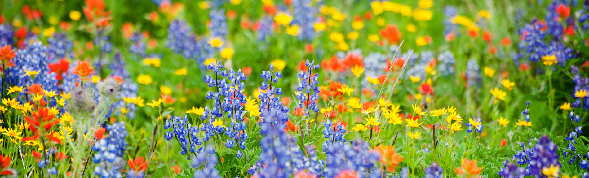

Native Plants You Can Grow
There are many other plants you can choose to grow that are native to Tennessee! Such as: Purple Aster, Butterfly Milkweed, Spiderwort, Tennessee Coneflower, Dense Blazing Star, Shooting Star, Fire PinkBleeding Heart, and More!
